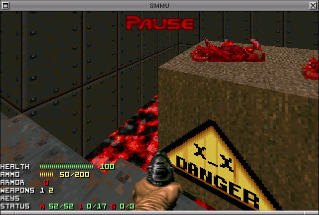
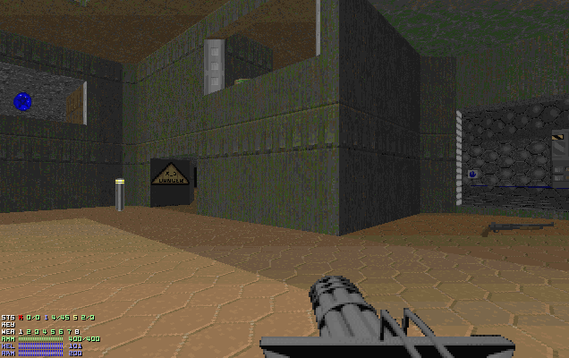
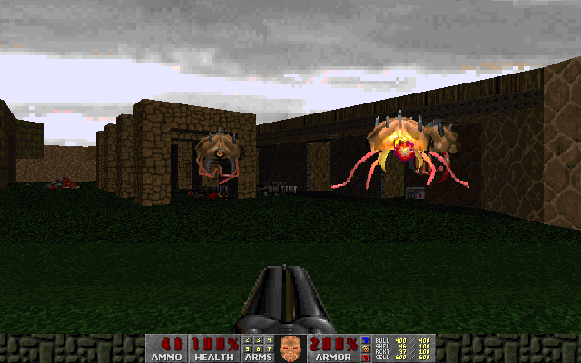

The IWAD file is a single large file that contains everything apart from program code that makes up Doom the game. All the levels, textures, sound effects, music and graphics bundled up into a single file, 14 megabytes in size. It was a very ambitious idea for a project, probably more ambitious than any other embarked upon by fans in Doom's history. The only comparable projects were commercial ones, like Hacx and total conversions, like Batman Doom.
Several days of discussion followed, including my emailing John Carmack to ask about the legality of such a project. He gave the idea a limited degree of blessing, while warning us to stay clear of Id's trademarks. I set up some basic infrastructure and the project took off to a quick start. In those early days it seemed like everyone was eager to contribute to Freedoom, and submissions came pouring in from many different people. 
Above is the earliest screenshot I can find of Freedoom. It's dated to July 10th 2001, only about a week after the project first started. The earliest submissions focussed on putting together a complete set of textures. Some of the submissions were slightly whimsical, as shown. But they were constant, and every day I was incorporating new textures and other material from people. The next screenshot is from August 8th, almost a month later, and shows Doom's E1M4, with all the visible graphics replaced. 
archive.org has a snapshot of the barebones website we had at this time. Most prominent were the linked status lists for all the resources we were trying to replace. Lists like these are really useful for motivating people: there's nothing better than seeing a list of small outstanding tasks to be completed. We also had a forum and IRC channel to coordinate work.
But while that technique works fine for knocking down lots of small tasks, it's the larger, more complex tasks where it doesn't work so well. A specific example is sprites. A typical monster can require 50 or more different sprites, for all the animation frames, and views from different sides (Doom's monsters can be viewed from 8 different angles). It's a lot more complicated than just drawing out a few textures, and requires a art skills that very few people possess, plus a lot of patience.
In September 2001 a user named “Saint of Killers” announced that he was working on several sprites for Freedoom, which was great news. Here are some early sketches of what would eventually become Freedoom's player, zombies and equivalent of Doom's Mancubus:
All of these were eventually developed into a full set of sprites, which Freedoom still uses to this day. But developing these into a full set of sprites proved difficult work. The biggest problem was that they were drawn out on paper by hand and scanned in. Sprites like these have to be very carefully cropped in order to avoid any white “speckles” around the edges from the surrounding paper. It's also necessary to do some color adjustment on the sprites as they can end up looking “washed out”.
Around the same time, we received replacements for the Imp and Cacodemon. These were instead based on 3D models converted to sprites. 
Despite this, by the end of October 2001, progress had seemingly ground to a halt, even though we now almost had a complete set of textures. In February 2002 there was more discussion about the drop in submissions. I suggested making a complete shareware WAD, as we were a good deal of the way there already. I thought it would make a good short term goal, but unfortunately the idea never really took off.
Later that year we faced a crisis as the project had outgrown its web hosting (it was being hosted on Doomworld admin Arioch's home DSL connection). I applied to Sourceforge for hosting and was initially rejected, but the Sourceforge admins relented and took the project on-board. A few months later they complained about the amount of bandwidth Freedoom was using — it had used 4 gigabytes of bandwidth in a week! (a lot for 2003). Following that complaint, I set up a proper release system and in April 2003, Freedoom 0.1 was released. Until that point, Freedoom had simply been using a “rolling release” system, with the current version always downloadable from the website.
Some other things happened: Rellik created a spin-off project called FreeDM, intended to be a deathmatch-only version of Freedoom. Freedoom was accepted as a Debian package, allowing Doom source ports like PrBoom to move into Debian's main repository. My own interest in Freedoom began to decrease over time, and long-term contributor Jon Dowland took over some of the work as co-maintainer to help out. We had a steady (but slow) stream of submissions over the next few years, but the activity level never returned to what was seen in those first few weeks.
In 2009 Mike Swanson took over as maintainer and things have improved significantly since then. Freedoom continues to get better all the time.